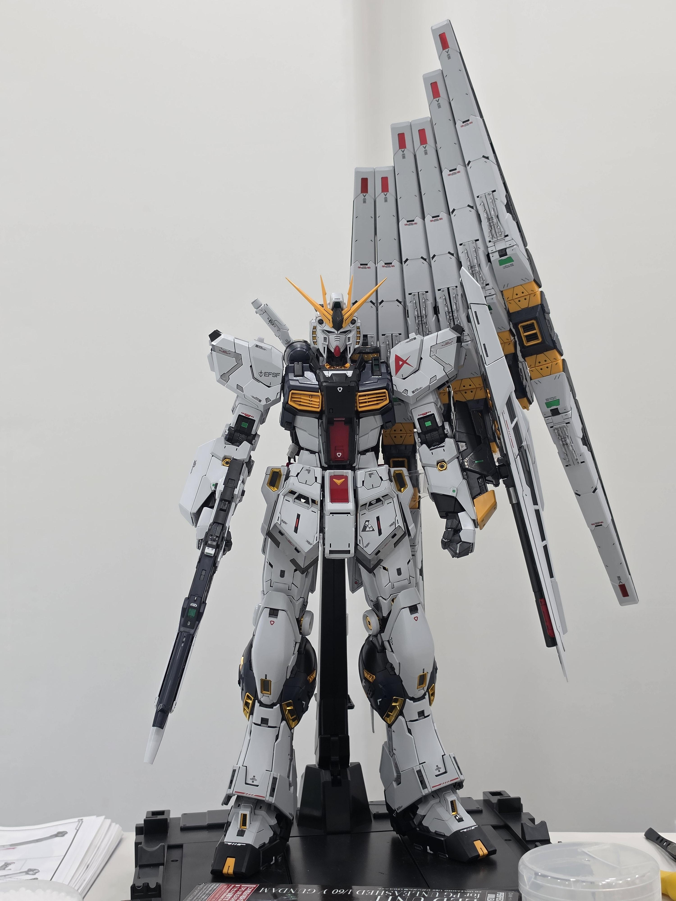
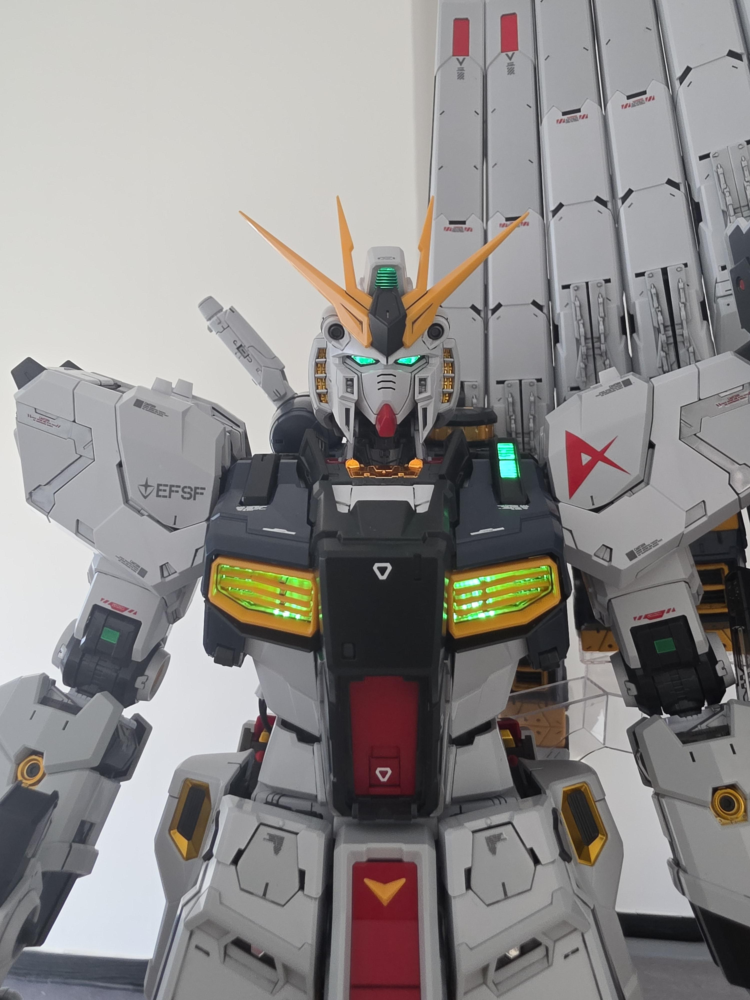
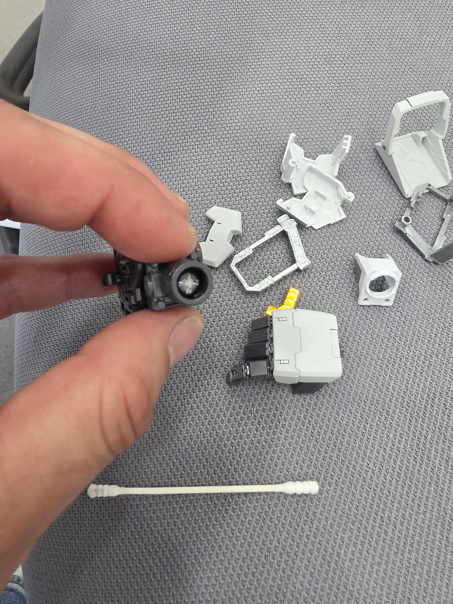

씨1ㅏㄹ.. 부품 부숴짐



씨1ㅏㄹ.. 부품 부숴짐
더위다.
50?
정가72였나
와우 프라 많이 올랐네
Led옵션이 무려 17만원.
날강도네
ㅋㅋㅋㅋㅋㅋㅋ
게이트 자국 티가 안나네 어케함 ㄷㄷ
어지간한곳은 언더게이트임
와 파츠 따로 파나 저거
황동봉 박아야지뭐
근데 허리는 어떰? 보강했음?
보강 안함 ㅋㅋㅋ 그냥 베이스에 스태츄 해놓음
글 보자마자 나도 이거 떠오르긴 하던데 안만질 생각이면 상관 없기는 하겠다.
먹선만 칠한거임 아니면 도색까지 다한거임? 때깔 개곱네
먹선만. 내부 프렘은 손 너무가서 신경 안 씀
저 플라스틱이 70만원임 합금프레임 x 온니 플라스틱 (코팅킷도아님)
요즘 반다이 프라모델들 사출컬러부터가 존나 곱게 잘 나옴ㅋㅋㅋ PG는 특히 더
내부 프레임 쩔던데ㄷㄷ
MG하이뉴 처음 나왔을때 고관절 부러진것도 어이없었는데 20년이 다되가는데 반다이는 바뀌질않냐
고관절에 사포질하고 핸드크림 발라놓음. 진짜로 부숴질 것 같아서
나도 첫 pg를 중딩때 알뜰살뜰 모아서 샀는데 조립하다 부러짐 ㅋㅋㅋㅋ
그 이후로 프라모델 관심 안 갖다가
대학생 되어서 문득 생각나 알아보니 내가 부러뜨린 파츠는 해당 기체의 고질적인 문제라더라 ㅋㅋ
아 시바 존나 슬프네 ㅠㅠ
중국 타오바오 가니까 잘 부러지는 부분들은 메탈부품 팔더라 ㅋㅋ
나는 사제로 기깔나는 베이스 나오면 그때나 조립할생각
이거 고관절 허벌인거 이슈 있던데 고쳐짐????
와 ㅅㅂ 퀄리티 지린다.
72만원치고 진짜 개짜치는 구성에 허리부분 이슈까지..그랴도 멋짐 흑흑
언리쉬드 라인업 쿠폰 막아버려서 졸지에 건베 수호신으로 등극함
포징좀 혀
핀 판넬 밑에 투명한건 뭐냐. 설마... 무게 문제를 해결 못한 겁니까 반다이?
황동파이프 사고 같은크기의 핸드드릴사서 구멍뚫어서 이어주면 될듯?
본 글 보고 댓글도 정독했는데 뭔 말인지 하나도 모르겠다ㅠㅠ
이야 그래도 때깔은 죽이네 가조 데칼 먹선이 이정도라고?
개같은 반다이. 쿠폰도 안되고..
나도 반다이파엿는데 물건구하기도 어렵고 mgex 20만원이나 주고 사야되는것도 이제 돈아까움
카피본 요즘 너무잘나와서 따거형님들만 믿음
철심박고 본드질해야지
+
너무 자책하지 마라 병신은 반다이니까
우주세기 기체지만 비우주세기 같은 기체
ㅋㅋㅋㅋㅋㅋ
부자시군요...
뉴건담은 겉치레야~
이거 개비싼데 쿠폰도 적용 안되지 않던가
이거 허리 관절 이슈 있던데 어캐 똑바로 세우셨네용
베이스에 투명으로 판넿 지지대가 들어있음
전쟁하는데 굳이 인간형 병기일 필요가 있나
부자 개붕이네
30만원정도하나?